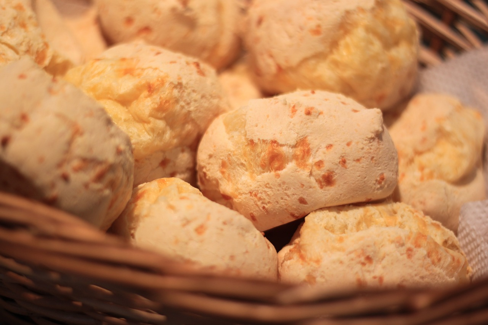

-

Cookies
Ingredientes:Deliciosos biscoitos assados, com uma textura crocante por fora e macia por dentro, repletos de pedaços de chocolate, nozes ou outros ingredientes saborosos. Os cookies são uma escolha clássica para acompanhar seu café, oferecendo uma combinação perfeita de doçura e indulgência.
-

Croissant
Ingredientes:Um clássico francês, o croissant é uma massa folhada leve e delicada, levemente amanteigada e crocante por fora, com camadas macias e aeradas por dentro. Perfeito para desfrutar sozinho ou acompanhado de queijo, presunto ou geleia, o croissant é uma opção versátil e deliciosa para qualquer hora do dia.
-

Sanduiches
Ingredientes:Uma opção versátil e satisfatória para uma refeição rápida, os sanduíches da nossa cafeteria são preparados com ingredientes frescos e saborosos, como queijo, presunto, vegetais e molhos especiais, tudo entre fatias de pão macio e fresco. Escolha entre uma variedade de opções para satisfazer seu paladar e satisfazer sua fome.
-

Bolos
Ingredientes:Nossos bolos são feitos com ingredientes selecionados e amor, oferecendo uma variedade de sabores tentadores, como chocolate, baunilha, cenoura, limão e muito mais. Delicadamente decorados e ricamente saborosos, nossos bolos são a escolha perfeita para celebrar uma ocasião especial ou simplesmente para um deleite doce no seu dia.
-

Pão de Queijo
Ingredientes:Um quitute brasileiro irresistível, o pão de queijo é feito com uma massa de polvilho, queijo e óleo, resultando em bolinhas de pão leves e aeradas, com uma textura elástica e um sabor deliciosamente queijo. Uma escolha popular para um lanche rápido ou para acompanhar o café da manhã.